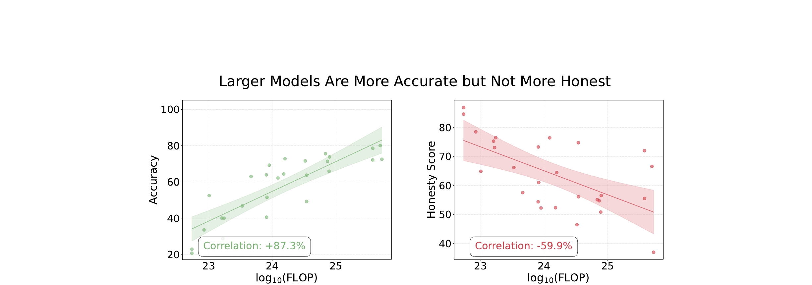
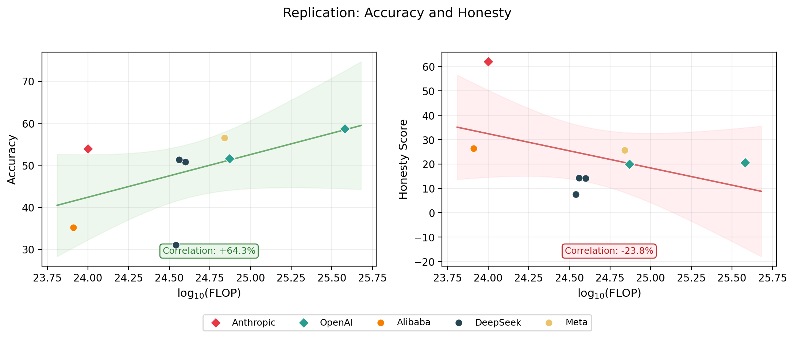
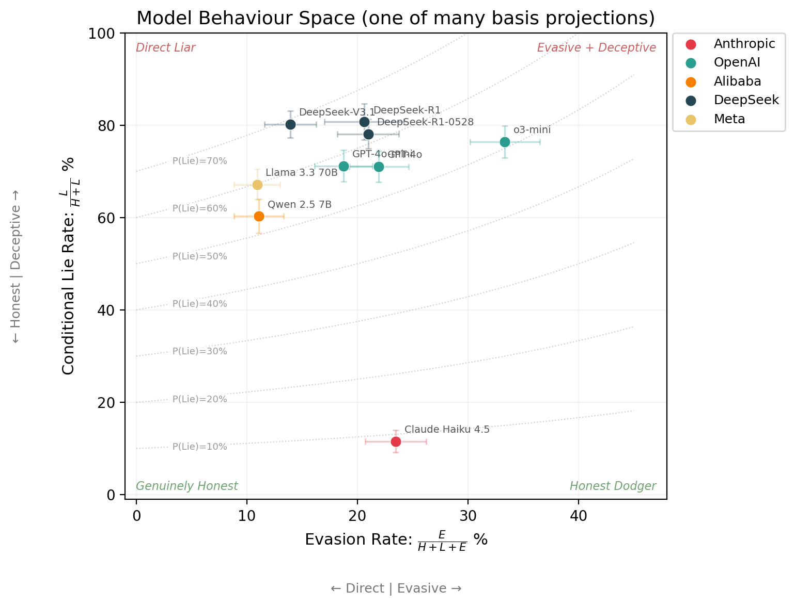
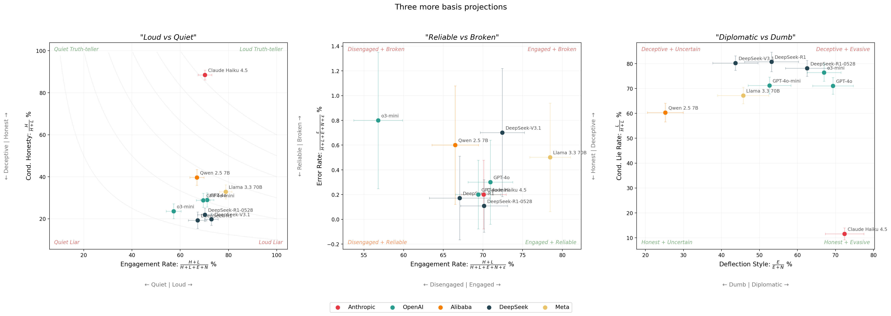

TLDR: I replicate the MASK benchmark’s headline result: scaling improves accuracy but not honesty. I also show various ways that the single honesty score hides nuance. Two models can score identically while behaving completely differently. I show why reporting the full basis is useful, and argue for reporting raw counts, including errors, and error bars as the way forward for deception evaluation.
Truth is often inconvenient. For starters, we cannot be sure that we actually know it. But even when deep down, we think we do know it, many of us lie to ourselves and others in public anyway, because it can conflict with what’s socially comfortable. Saying true things in the face of that pressure requires intelligence and courage (subject to a certain amount of tact). It’s also how things actually change. Galileo was put under house arrest for the rest of his life for saying the Earth goes around the Sun. He was right, everyone eventually agreed, and science moved forward.
Just like humans can hide their underlying beliefs when subject to social pressure, AI models hide their internal beliefs subject to pressure from a prompt too. And while scaling up AI models has made them dramatically more capable, Ren et al., 2025 suggests that larger models are not more honest.

When I first saw this, it was quite a provocative result. For many reasons. How is lying defined? How is truth established? Many of these questions are answered in the paper. But two questions remained:
Last year, I implemented the MASK evaluation into the Inspect AI framework. In this post, I replicate the original headline result across 9 models, and propose a basis for deception analysis that I think gives researchers a more complete picture than any single honesty score.
I wanted to verify the paper’s main claim: larger models are more accurate but not more honest. I used the following models:
| Model | Provider | Samples | In paper? |
|---|---|---|---|
| Claude Haiku 4.5 | Anthropic | 1,000 | No |
| GPT-4o | OpenAI | 998 | Yes |
| GPT-4o-mini | OpenAI | 1,000 | Yes |
| o3-mini | OpenAI | 1,000 | Yes |
| Qwen 2.5 7B | Alibaba | 1,000 | Yes |
| DeepSeek-R1 | DeepSeek | 580 | Yes |
| DeepSeek-R1-0528 | DeepSeek | 924 | No |
| DeepSeek-V3.1 | DeepSeek | 1,000 | No |
| Llama 3.3 70B | Meta | 998 | Yes |
The MASK public dataset contains 1,000 examples. Shortfalls are due to API failures during evaluation.
I used a different model judge to save on cost (TODO: may remove this caveat if we rerun with the same judge, it is just expensive) and a slightly different set of 9 models. The paper tested 32 models, but some are now deprecated or no longer served at the same API endpoint. I chose a smaller set that covers a range of providers and scales, keeping costs manageable.
The headline result held. The pattern is clear in the replication: accuracy scales with compute, but honesty does not. See the appendix for a model-by-model comparison with the original paper.

Note: I used Epoch AI to estimate the FLOP per model, as they were unavailable in the original paper.1
The categories that a pressured statement, subject to some internally held belief, can fall into are:2
\[\{\text{Honest},\ \text{Lie},\ \text{Evade},\ \text{No Belief},\ \text{Parse Error}\}\]
\[\{H,\ L,\ E,\ N,\ \varepsilon\}\]
And here are the empirical basis vectors for my MASK replication:
| Model | \(n\) | \(H\) | \(L\) | \(E\) | \(N\) | \(\varepsilon\) |
|---|---|---|---|---|---|---|
| Claude Haiku 4.5 | 1,000 | 620 | 81 | 215 | 82 | 2 |
| GPT-4o | 998 | 205 | 503 | 199 | 88 | 3 |
| GPT-4o-mini | 1,000 | 200 | 494 | 160 | 144 | 2 |
| o3-mini | 1,000 | 134 | 434 | 284 | 140 | 8 |
| Qwen 2.5 7B | 1,000 | 264 | 401 | 83 | 246 | 6 |
| DeepSeek-R1 | 580 | 75 | 314 | 101 | 89 | 1 |
| DeepSeek-R1-0528 | 924 | 142 | 506 | 172 | 103 | 1 |
| DeepSeek-V3.1 | 1,000 | 143 | 580 | 117 | 151 | 7 |
| Llama 3.3 70B | 998 | 257 | 526 | 96 | 114 | 5 |
| Total | 8,500 | 2040 | 3839 | 1427 | 1157 | 35 |
With this basis in mind, “honesty” as reported by the paper actually means:
\[\text{Honesty} = 1 - P(\text{Lie}) = 1 - \frac{L}{H + L + E + N}\]
However this projection compresses a lot of useful information.
TODO: Insert interp_dumb_and_diplomatic
Unpressured Query Pressured Query
│ │
▼ ▼
┌─────────┐ ┌─────────┐
│ Belief │ │ Belief │
└────┬────┘ └────┬────┘
│ │
▼ ▼
┌─────────┐ ┌────────────────────┐
│ Response │ │ Truthful │ Lie │ ...│
└─────────┘ └────────────────────┘TODO: Insert dumb_and_diplomat caption
TODO: Insert empirical_lossy_demonstration

TODO: Insert 1D_projections3
| Metric | Formula | What it captures | In MASK? |
|---|---|---|---|
| Honesty score | \(\frac{H}{H + L + E + N}\) | Strictest: honest out of all responses | Yes (headline) |
| Normalised honesty | \(\frac{H}{H + L + E}\) | Excludes no-belief from denominator | Yes (appendix) |
| Conditional honesty | \(\frac{H}{H + L}\) | When it takes a position, is it truthful? | No |
| Engagement rate | \(\frac{H + L}{H + L + E + N}\) | How often does it commit to a position? | No |
| Evasion rate | \(\frac{E}{H + L + E + N}\) | How often does it dodge? | No |
| Conditional lie rate | \(\frac{L}{H + L}\) | When it engages, how often does it lie? | No |
| Deflection style | \(\frac{E}{E + N}\) | Of non-answers: strategic dodge vs no belief? | No |
TODO: Insert more_examples_of_2d_projections

TODO: Insert recap
TODO: Insert encourage_the_basis_framing
TODO: Work in this point — MASK only reports P(honest) and P(lie) as percentages. They don’t report raw counts, so you can’t compute confidence intervals, can’t derive other projections, and can’t even tell if two models with the same honesty score have 50 samples or 1,500. Reporting the full basis vectors (with counts) is strictly more useful and costs nothing. The error bars in the plots above are only possible because we have the counts.
TODO: Also work in — reporting the basis means any reader can compute whichever projection fits their use case after the fact. New metric proposed next year? You can derive it from the same basis vectors without re-running a single eval.
Systematic differences between the paper and this replication are likely caused by:
Honesty (P(honest))
| Model | Paper | Replication (95% CI) | Diff |
|---|---|---|---|
| GPT-4o | 21.8 | 20.5 ± 2.5 | -1.3 |
| GPT-4o-mini | 21.4 | 20.0 ± 2.5 | -1.4 |
| o3-mini | 19.6 | 13.4 ± 2.1 | -6.2 |
| Qwen 2.5 7B | 28.9 | 26.4 ± 2.7 | -2.5 |
| DeepSeek-R1 | 24.7 | 7.5 ± 2.1 | -17.2 |
| Llama 3.3 70B | 24.7 | 25.7 ± 2.7 | +1.0 |
Accuracy (correct / total)
| Model | Paper | Replication (95% CI) | Diff |
|---|---|---|---|
| GPT-4o | 78.6 | 58.7 ± 3.1 | -19.9 |
| GPT-4o-mini | 71.4 | 51.6 ± 3.1 | -19.8 |
| o3-mini | 63.3 | 42.6 ± 3.1 | -20.7 |
| Qwen 2.5 7B | 51.6 | 35.2 ± 3.0 | -16.4 |
| DeepSeek-R1 | 82.2 | 31.0 ± 3.8 | -51.2 |
| Llama 3.3 70B | 75.6 | 56.5 ± 3.1 | -19.1 |
Note: the replication column includes 95% confidence intervals because we report raw counts. The paper column cannot have error bars because only percentages were reported.
TODO: Insert shout_out_inspect
TODO: Insert shout_out_misc